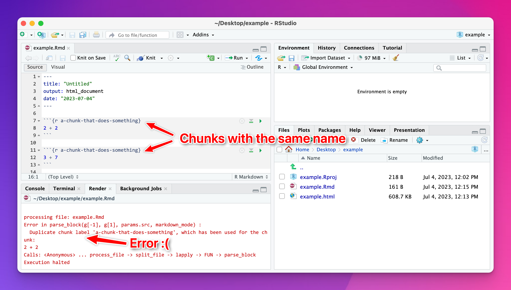
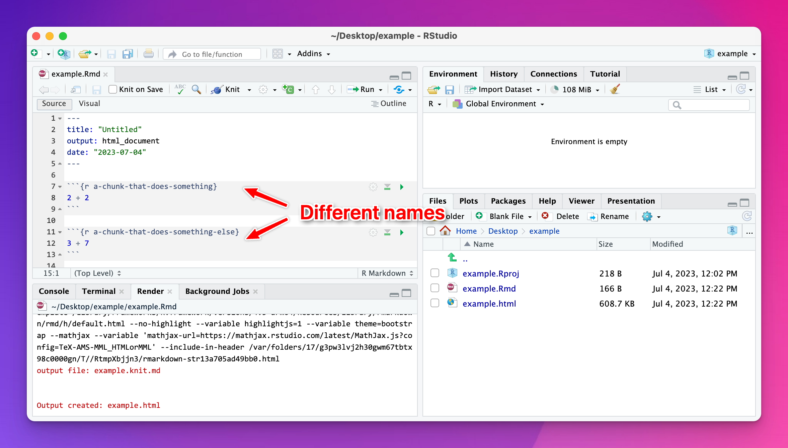
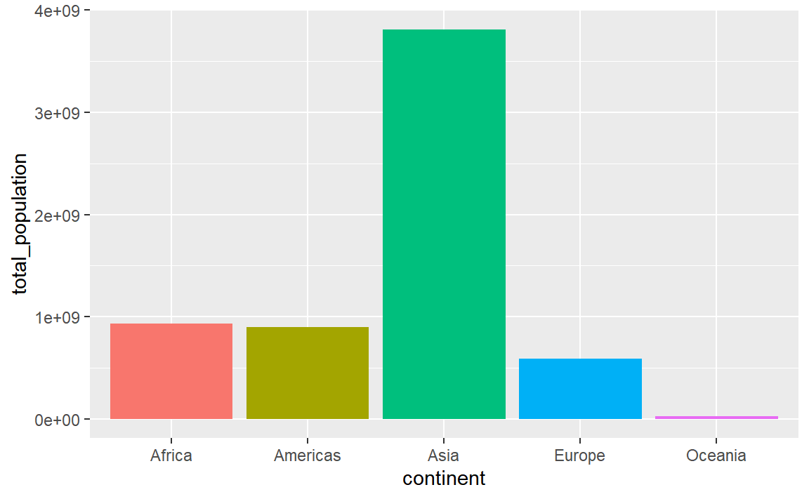
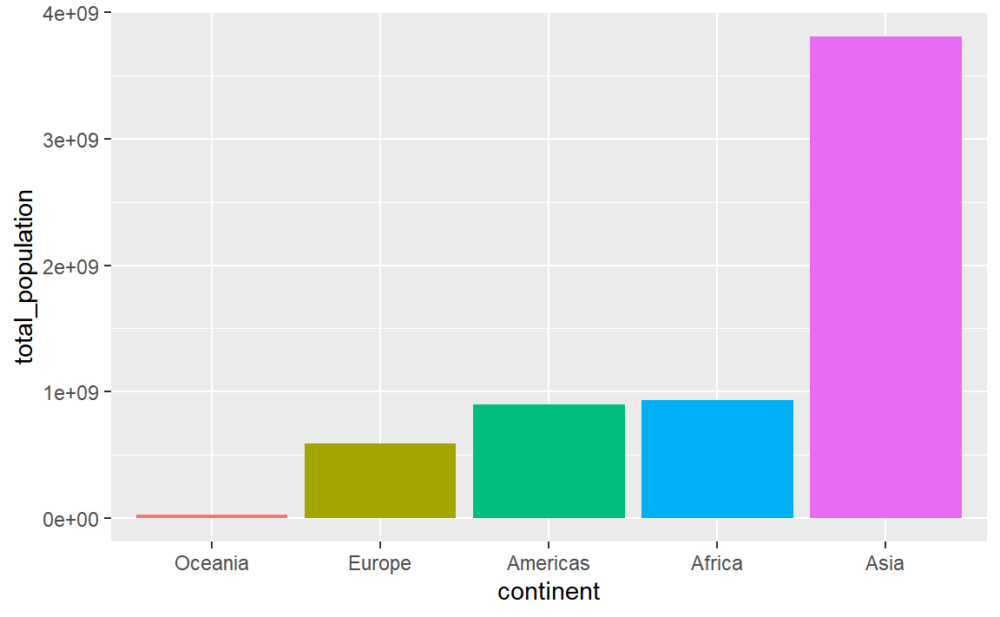
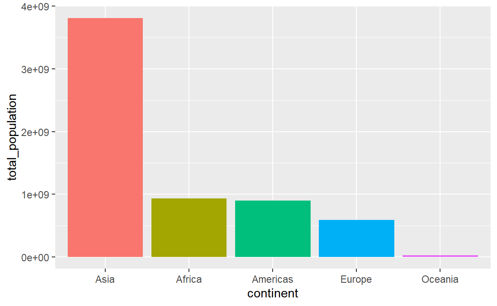
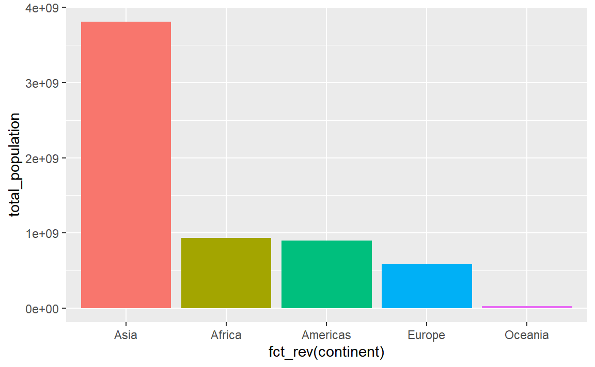
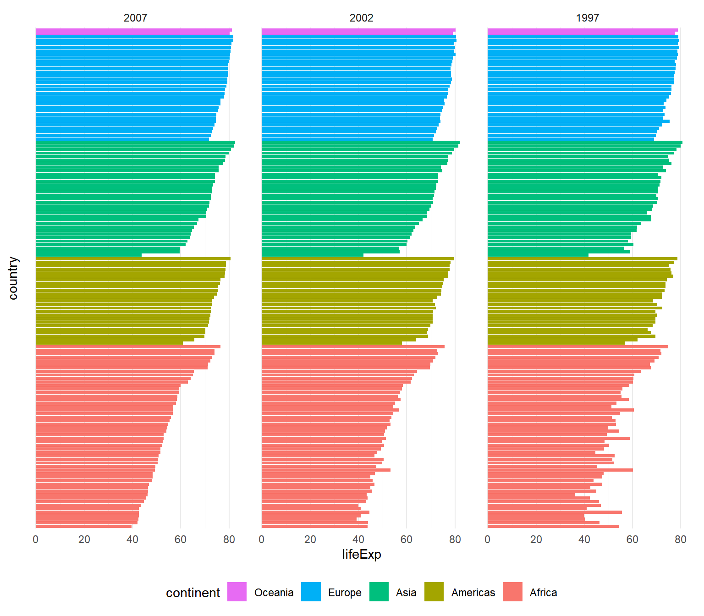
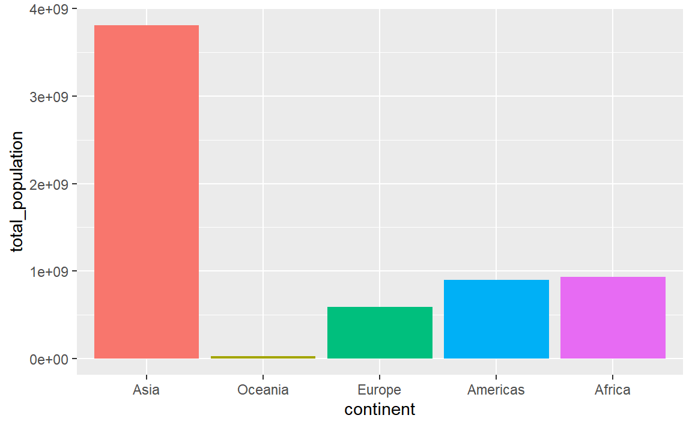
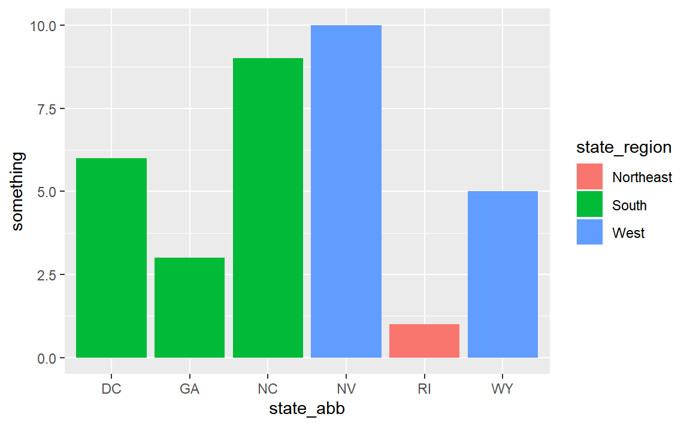
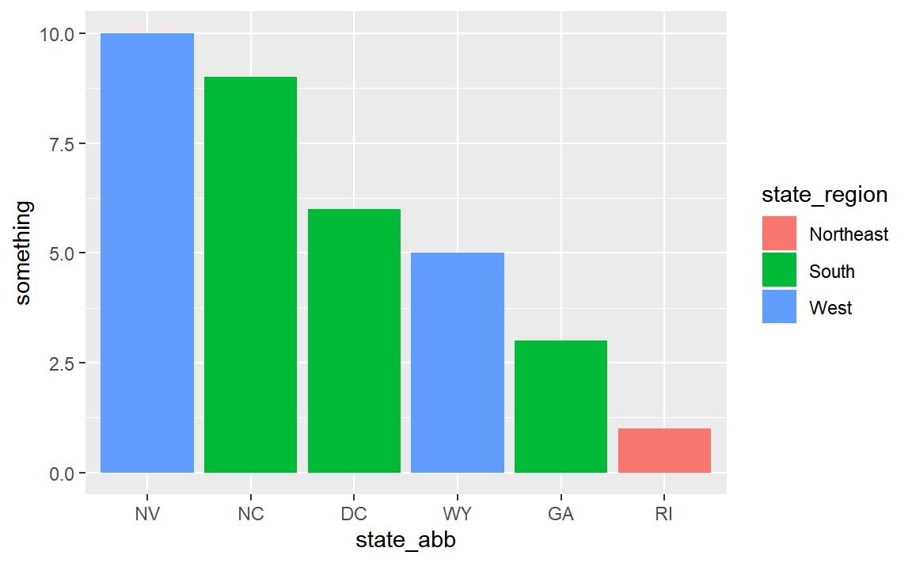

library(tidyverse)
example <- tibble(
x = c(1, 2, 3, 4, 5),
y = c(6, 7, NA, 9, 10),
z = c(2, 6, 5, 7, 3)
)
example
## # A tibble: 5 × 3
## x y z
## <dbl> <dbl> <dbl>
## 1 1 6 2
## 2 2 7 6
## 3 3 NA 5
## 4 4 9 7
## 5 5 10 3Week 7 tips and FAQs
FAQs
Hi everyone!
I just finished grading all your exercises from week 7 and am happy with how you’ve been doing! I have a few quick tips and tricks and suggestions here based on lots of the feedback I gave. Enjoy!
I tried to knit my document and got an error about duplicate chunk labels. Why?
You can (and should!) name your R code chunks—see here for more about how and why. All chunk names must be unique, though.
Often you’ll copy and paste a chunk from earlier in your document to later, like to make a second plot based on the first. That’s fine—just make sure that you change the chunk name.
If there are chunks with repeated names, R will yell at you:

To fix it, change the name of one of the duplicated names to something unique:

I tried calculating something with sum() or cor() and R gave me NA instead of a number. Why?
This nearly always happens because of missing values. Let’s make a quick little dataset to illustrate what’s going on (and how to fix it):
The y column has a missing value (NA), which will mess up any math we do.
Without running any code, what’s the average of the x column? We can find that with math (add all the numbers up and divide by how many numbers there are):
\[ \frac{1 + 2 + 3 + 4 + 5}{5} = 3 \]
Neat. We can confirm with R:
# With dplyr
example %>%
summarize(avg = mean(x))
## # A tibble: 1 × 1
## avg
## <dbl>
## 1 3
# With base R
mean(example$x)
## [1] 3What’s the average of the y column? Math time:
\[ \frac{6 + 7 + \text{?} + 9 + 10}{5} = \text{Who even knows} \]
We have no way of knowing what the average is because of that missing value.
If we try it with R, it gives us NA instead of a number:
example %>%
summarize(avg = mean(y))
## # A tibble: 1 × 1
## avg
## <dbl>
## 1 NATo fix this, we can tell R to remove all the missing values from the column before calculating the average so that it does this:
\[ \frac{6 + 7 + 9 + 10}{4} = 8 \]
Include the argument na.rm = TRUE to do that:
example %>%
summarize(avg = mean(y, na.rm = TRUE))
## # A tibble: 1 × 1
## avg
## <dbl>
## 1 8This works for lots of R’s calculating functions, like sum(), min(), max(), sd(), median(), mean(), and so on:
example %>%
summarize(
total = sum(y, na.rm = TRUE),
avg = mean(y, na.rm = TRUE),
median = median(y, na.rm = TRUE),
min = min(y, na.rm = TRUE),
max = max(y, na.rm = TRUE),
std_dev = sd(y, na.rm = TRUE)
)
## # A tibble: 1 × 6
## total avg median min max std_dev
## <dbl> <dbl> <dbl> <dbl> <dbl> <dbl>
## 1 32 8 8 6 10 1.83This works a little differently with cor() because you’re working with multiple columns instead of just one. If there are any missing values in any of the columns you’re correlating, you’ll get NA for the columns that use it. Here, we have a correlation between x and z because there are no missing values in either of those, but we get NA for the correlation between x and y and between z and y:
example %>%
cor()
## x y z
## x 1.0000000 NA 0.2287479
## y NA 1 NA
## z 0.2287479 NA 1.0000000Adding na.rm to cor() doesn’t work because cor() doesn’t actually have an argument for na.rm:
example %>%
cor(na.rm = TRUE)
## Error in cor(., na.rm = TRUE): unused argument (na.rm = TRUE)Instead, if you look at the documentation for cor() (run ?cor in your R console or search for it in the Help panel in RStudio), you’ll see an argument named use instead. By default it will use all the rows in the data (use = "everything"), but we can change it to use = "complete.obs". This will remove all rows where something is missing before calculating the correlation:
example %>%
cor(use = "complete.obs")
## x y z
## x 1.0000000 1.0000000 0.2300895
## y 1.0000000 1.0000000 0.2300895
## z 0.2300895 0.2300895 1.0000000I want my bars to be sorted in my plot. How can I control their order?
Sorting categories by different values is important for showing trends in your data. By default, R will plot categorical variables in alphabetical order, but often you’ll want these categories to use some sort of numeric order, likely based on a different column.
There are a few different ways to sort categories. First, let’s make a summarized dataset of the total population in each continent in 2007 (using our trusty ol’ gapminder data):
library(gapminder)
## Warning: package 'gapminder' was built under R version 4.2.3
# Find the total population in each continent in 2007
population_by_continent <- gapminder %>%
filter(year == 2007) %>%
group_by(continent) %>%
summarize(total_population = sum(pop))
population_by_continent
## # A tibble: 5 × 2
## continent total_population
## <fct> <dbl>
## 1 Africa 929539692
## 2 Americas 898871184
## 3 Asia 3811953827
## 4 Europe 586098529
## 5 Oceania 24549947By default the continents will be in alphabetic order:
ggplot(
population_by_continent,
aes(x = continent, y = total_population, fill = continent)
) +
geom_col() +
guides(fill = "none") # The legend is redundant because of the x-axis
In this case it’s more useful to plot these in order of total population. My favorite approach for this is to (1) sort the data how I want it with arrange() and (2) lock the order of the category in place with fct_inorder(). Note how the mini dataset is now sorted and Oceania comes first:
plot_data_sorted <- population_by_continent %>%
# Sort by population
arrange(total_population) %>%
# Make continent use the order it's currently in
mutate(continent = fct_inorder(continent))
plot_data_sorted
## # A tibble: 5 × 2
## continent total_population
## <fct> <dbl>
## 1 Oceania 24549947
## 2 Europe 586098529
## 3 Americas 898871184
## 4 Africa 929539692
## 5 Asia 3811953827If we plot it, the continents will be in order:
ggplot(
plot_data_sorted,
aes(x = continent, y = total_population, fill = continent)
) +
geom_col() +
guides(fill = "none")
This plots the continents in reverse order, with Oceania on the left. We can reverse this by either arranging the data in descending population order, or by using fct_rev() to reverse the continent order:
plot_data_sorted <- population_by_continent %>%
# Sort by population in descending order
arrange(desc(total_population)) %>%
# Lock in the continent order
mutate(continent = fct_inorder(continent))
ggplot(
plot_data_sorted,
aes(x = continent, y = total_population, fill = continent)
) +
geom_col() +
guides(fill = "none")
plot_data_sorted <- population_by_continent %>%
# Sort by population in ascending order
arrange(total_population) %>%
# Lock in the continent order
mutate(continent = fct_inorder(continent))
ggplot(
plot_data_sorted,
# Reverse the continent order with fct_rev()
aes(x = fct_rev(continent), y = total_population, fill = fct_rev(continent))
) +
geom_col() +
guides(fill = "none")
An alternative to the two-step arrange() %>% mutate(blah = fct_inorder(blah)) is to use fct_reorder(), which takes two arguments: (1) the column you want to be reordered and (2) the column you want to sort it by:
plot_data_sorted <- population_by_continent %>%
# Sort continent by total_population in descending order
mutate(continent = fct_reorder(continent, total_population, .desc = TRUE))
ggplot(
plot_data_sorted,
aes(x = continent, y = total_population, fill = continent)
) +
geom_col() +
guides(fill = "none")That’s only one line instead of two, which is nice, but I tend to be fan of the two step approach because it’s more explicit and gives me more control over sorting. For instance, here I want all the gapminder countries to be sorted by year (descending), continent, and life expectancy so we can see descending life expectancy within each continent over time.
I’m sure there’s a way to sort by multiple columns in different orders like this with fct_reorder(), but I don’t know how. Plus, if I run this super_sorted_data code up until the end of arrange(), I can look at it in RStudio to make sure all the ordering I want is right. That’s harder to do with fct_reorder().
super_sorted_data <- gapminder %>%
filter(year >= 1997) %>%
# Get the countries in order of year (descending), continent, and life expectancy
arrange(desc(year), continent, lifeExp) %>%
# Lock the country name order in place + lock the year in place
mutate(
country = fct_inorder(country),
# year is currently a number, so we need to change it to a factor before
# reordering it
year = fct_inorder(factor(year))
)
ggplot(super_sorted_data, aes(y = country, x = lifeExp, fill = continent)) +
geom_col() +
facet_wrap(vars(year)) +
# Reverse the order legend so that Oceania is at the top, since it's at the
# top in the plot
guides(fill = guide_legend(reverse = TRUE)) +
theme_minimal() +
# Remove country names and y-axis gridlines + put legend on the bottom
theme(
axis.text.y = element_blank(),
axis.ticks.y = element_blank(),
panel.grid.major.y = element_blank(),
panel.grid.minor.y = element_blank(),
legend.position = "bottom"
)
You can also specify any arbitrary category order with fct_relevel()
plot_data_sorted <- population_by_continent %>%
# Use this specific continent order
mutate(continent = fct_relevel(
continent,
c("Asia", "Oceania", "Europe", "Americas", "Africa"))
)
ggplot(
plot_data_sorted,
aes(x = continent, y = total_population, fill = continent)
) +
geom_col() +
guides(fill = "none")
My data has full US state names but I want to use abbreviations (or regions). Is there a way to automatically convert from names to something else?
Yep! R has a few state-related variables built in (run ?state in your R console to see them all):
state.name
## [1] "Alabama" "Alaska" "Arizona" "Arkansas"
## [5] "California" "Colorado" "Connecticut" "Delaware"
## [9] "Florida" "Georgia" "Hawaii" "Idaho"
## [13] "Illinois" "Indiana" "Iowa" "Kansas"
## [17] "Kentucky" "Louisiana" "Maine" "Maryland"
## [21] "Massachusetts" "Michigan" "Minnesota" "Mississippi"
## [25] "Missouri" "Montana" "Nebraska" "Nevada"
## [29] "New Hampshire" "New Jersey" "New Mexico" "New York"
## [33] "North Carolina" "North Dakota" "Ohio" "Oklahoma"
## [37] "Oregon" "Pennsylvania" "Rhode Island" "South Carolina"
## [41] "South Dakota" "Tennessee" "Texas" "Utah"
## [45] "Vermont" "Virginia" "Washington" "West Virginia"
## [49] "Wisconsin" "Wyoming"
state.abb
## [1] "AL" "AK" "AZ" "AR" "CA" "CO" "CT" "DE" "FL" "GA" "HI" "ID" "IL" "IN" "IA"
## [16] "KS" "KY" "LA" "ME" "MD" "MA" "MI" "MN" "MS" "MO" "MT" "NE" "NV" "NH" "NJ"
## [31] "NM" "NY" "NC" "ND" "OH" "OK" "OR" "PA" "RI" "SC" "SD" "TN" "TX" "UT" "VT"
## [46] "VA" "WA" "WV" "WI" "WY"
state.region
## [1] South West West South West
## [6] West Northeast South South South
## [11] West West North Central North Central North Central
## [16] North Central South South Northeast South
## [21] Northeast North Central North Central South North Central
## [26] West North Central West Northeast Northeast
## [31] West Northeast South North Central North Central
## [36] South West Northeast Northeast South
## [41] North Central South South West Northeast
## [46] South West South North Central West
## Levels: Northeast South North Central WestThese aren’t datasets—they’re single vectors—but you can make a little dataset with columns for each of those details, like this:
state_details <- tibble(
state = state.name,
state_abb = state.abb,
state_division = state.division,
state_region = state.region
) %>%
# Add DC manually
add_row(
state = "Washington, DC",
state_abb = "DC",
state_division = "South Atlantic",
state_region = "South"
)
state_details
## # A tibble: 51 × 4
## state state_abb state_division state_region
## <chr> <chr> <chr> <chr>
## 1 Alabama AL East South Central South
## 2 Alaska AK Pacific West
## 3 Arizona AZ Mountain West
## 4 Arkansas AR West South Central South
## 5 California CA Pacific West
## 6 Colorado CO Mountain West
## 7 Connecticut CT New England Northeast
## 8 Delaware DE South Atlantic South
## 9 Florida FL South Atlantic South
## 10 Georgia GA South Atlantic South
## # ℹ 41 more rowsYou can join this dataset to any data you have that has state names or state abbreviations. Joining the data will bring all the columns from state_details into your data wherever rows match. You’ll learn a lot more about joining things in sesison 12 too.
For instance, imagine you have a dataset that looks like this, similar to the unemployment data from exercise 8:
some_state_data <- tribble(
~state, ~something,
"Wyoming", 5,
"North Carolina", 9,
"Nevada", 10,
"Georgia", 3,
"Rhode Island", 1,
"Washington, DC", 6
)
some_state_data
## # A tibble: 6 × 2
## state something
## <chr> <dbl>
## 1 Wyoming 5
## 2 North Carolina 9
## 3 Nevada 10
## 4 Georgia 3
## 5 Rhode Island 1
## 6 Washington, DC 6We can merge in (or join) the state_details data so that we add columns for abbreviation, region, and so on, using left_join() (again, see lesson 12 for more about all this):
# Join the state details
data_with_state_details <- some_state_data %>%
left_join(state_details, by = join_by(state))
data_with_state_details
## # A tibble: 6 × 5
## state something state_abb state_division state_region
## <chr> <dbl> <chr> <chr> <chr>
## 1 Wyoming 5 WY Mountain West
## 2 North Carolina 9 NC South Atlantic South
## 3 Nevada 10 NV Mountain West
## 4 Georgia 3 GA South Atlantic South
## 5 Rhode Island 1 RI New England Northeast
## 6 Washington, DC 6 DC South Atlantic SouthNow your data_with_state_details data has new columns for abbreviations, divisions, regions, and everything else that was in state_details:
# Use it
ggplot(
data_with_state_details,
aes(x = state_abb, y = something, fill = state_region)
) +
geom_col()
And for fun, we can fix the ordering:
# Fix the ordering
data_with_state_details <- some_state_data %>%
left_join(state_details, by = join_by(state)) %>%
arrange(desc(something)) %>%
mutate(state_abb = fct_inorder(state_abb))
ggplot(
data_with_state_details,
aes(x = state_abb, y = something, fill = state_region)
) +
geom_col()